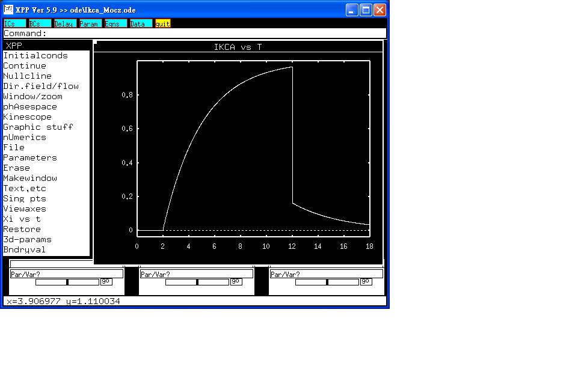

This is the readme for the model associated with the papers:
1. Moczydlowski & Latorre Gating kinetics of Ca++-activated K+
channels from rat muscle incorporated into planar lipid
bilayers. J Gen Physiol 1983;82:511-542.
2. Wang et a., Riluzole-induced block of voltage-gated Na(+) current
and activation of BK(Ca) channels in cultured differentiated human
skeletal muscle cells. Life Sci 2008;82:11-20.
Abstract:
The gating kinetics of a Ca2+-activated K+ channel from adult rat
muscle plasma membrane are studied in artificial planar
bilayers. Analysis of single-channel fluctuations distinguishes two
Ca2+- and voltage-dependent processes: (a) short-lived channel closure
(less than 1 ms) events appearing in a bursting pattern; (b) opening
and closing events ranging from one to several hundred milliseconds in
duration. The latter process is studied independently of the first and
is denoted as the primary gating mode. At constant voltage, the mean
open time of the primary gating mode is a linear function of the
[Ca2+], whereas the mean closed time is a linear function of the
reciprocal [Ca2+]. In the limits of zero and infinite [Ca2+], the mean
open and the mean closed times are, respectively, independent of
voltage. These results are predicted by a kinetic scheme consisting of
the following reaction steps: (a) binding of Ca2+ to a closed state;
(b) channel opening; (c) binding of a second Ca2+ ion. In this scheme,
the two Ca2+ binding reactions are voltage dependent, whereas the
open-closed transition is voltage independent. The kinetic constant
derived for this scheme gives an accurate theoretical fit to the
observed equilibrium open-state probability. The results provide
evidence for a novel regulatory mechanism for the activity of an ion
channel: modulation by voltage of the binding of an agonist molecule,
in this case, Ca2+ ion.
To run the model:
Expand the archive and cd into the newly created directory and run:
xppaut Ikca.ode
then click on Initialcond -> Go
The trace from voltage-clamp simulation of 'cagk.mod' in NEURON was
reproduced:

The model file was supplied by:
Dr. Sheng-Nan Wu
National Cheng Kung University Medical College
Tainan 70101, Taiwan
snwu@mail.ncku.edu.tw